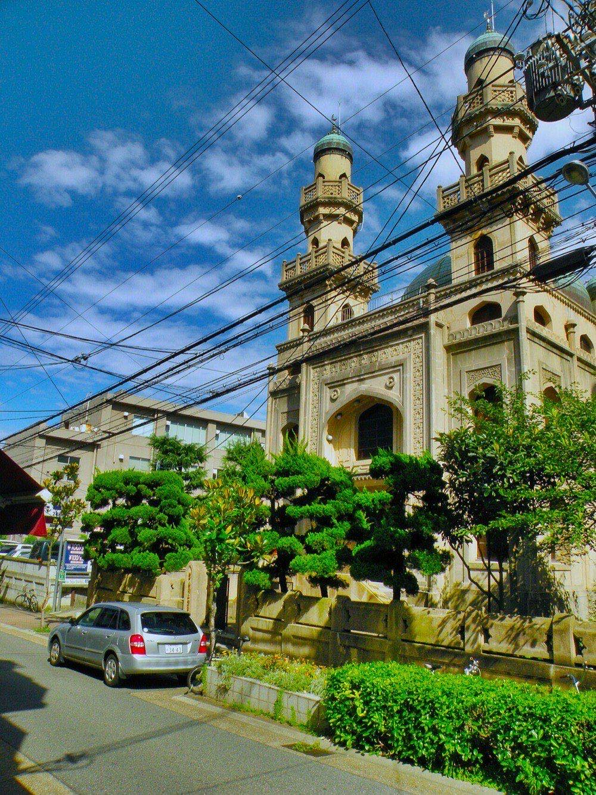

I
La intención
Una llamada de media hora, sin cuestionario. Queremos saber qué espera de este viaje, no rellenar una ficha con sus datos.
Un itinerario diseñado para otra persona no le va a gustar por mucho que esté bien hecho.
Viajes privados · Dubái
Nawà, en árabe, es proponerse ir a un sitio. La intención antes que el trayecto. Nosotros empezamos ahí y no en un catálogo.
Cómo trabajamos
Una llamada de media hora, sin cuestionario. Queremos saber qué espera de este viaje, no rellenar una ficha con sus datos.
Un itinerario diseñado para otra persona no le va a gustar por mucho que esté bien hecho.
Se la entregamos escrita, día por día, con las horas reales de traslado y el nombre de cada sitio. Presupuesto cerrado y nada reservado todavía.
Se lee entera en veinte minutos. Si no se entiende sola, es que está mal planteada.
Durante el viaje hay una persona localizable en su idioma y a su hora. La misma de principio a fin, y con su itinerario aprendido.
Todo viaje se tuerce alguna vez. Lo que distingue a unos de otros es cuánto tarda alguien en arreglarlo.


No medimos un viaje por los sitios que vio, sino por las decisiones que no tuvo que tomar.Nawa · Dubái
Escríbanos